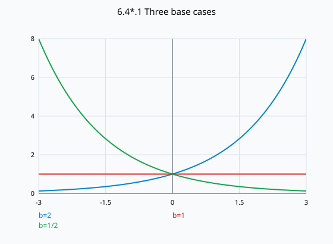

문제 요약
밑b>0인 지수함수의(a)식,(b)정의역,(c)b≠1일 때 치역,(d)b>1,b=1,0<b<1인 그래프를 설명하라.

힌트. 정의와 주어진 조건을 식으로 옮겨 단계별로 계산한다.
해설.
양의 밑 \(b\)에 대해 \(b^x=e^{x\ln b}\)로 바꾸면 지수함수의 성질을 한 식으로 다룰 수 있다. 밑이 1보다 크면 증가하고 0과 1 사이면 감소한다. 미분에서는 \((b^{u})^{\prime}=b^u\ln(b)u^{\prime}\)이므로 상수 밑의 로그와 안쪽 도함수를 모두 포함한다.
\[b^x=e^{x\ln b},\quad b>0\]
\[f(x)=b^x,\quad D=\mathbb R,\quad R=(0,\infty)\ (b\ne1)\]
b>1이면 증가,0<b<1이면 감소하며(0,1)을 지난다. b=1이면 상수함수1이다.
최종 답. 식bˣ, 정의역ℝ; b≠1이면 치역(0,∞). b>1 증가,b=1 상수,0<b<1 감소.
검산·주의점. b⁰=1과 b^(-x)=1/bˣ로 절편과 반사 관계를 확인한다.
Problem summary
For an exponential function with base b>0, give(a)its equation,(b)domain,(c)range when b≠1,and(d)graphs for b>1,b=1,0<b<1.
Hint. Translate the definitions and conditions into equations, then work through them.
Solution.
For positive base \(b\), write \(b^x=e^{x\ln b}\). The function increases for \(b>1\) and decreases for \(0<b<1\). Differentiation gives \((b^{u})^{\prime}=b^u\ln(b)u^{\prime}\), including both the logarithm of the base and the inner derivative.
\[b^x=e^{x\ln b},\quad b>0\]
\[f(x)=b^x,\quad D=\mathbb R,\quad R=(0,\infty)\ (b\ne1)\]
For b>1 it increases; for0<b<1 it decreases; both pass(0,1). For b=1 it is constantly1.
Final answer. Formula bˣ,domainℝ; range(0,∞) for b≠1. Increasing for b>1,constant for b=1,decreasing for0<b<1.
Check and conditions. b⁰=1 and b^(-x)=1/bˣ confirm the intercept and reflection relation.